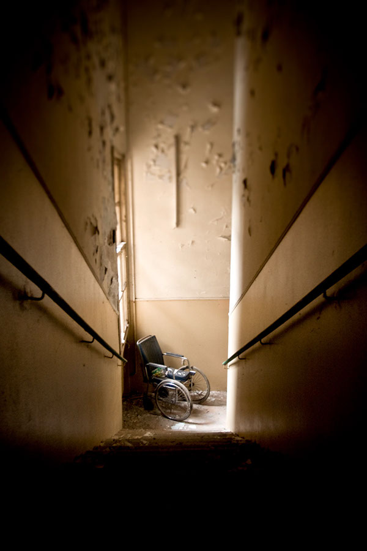

A strange Night on Halloween
You and your friends Alex, Gabe, and Coco decide to make Halloween a night to remember. After trick or treating you go to the creepy abandoned asylum on Hemlock Street to explore and take some rad pictures. Before entering the facility, you feel a heavy force make contact with your head and daze off into a pool of blackness.
You wake up with you and all your friends in a dark room, what do you do?
1. Look for an exit
2. Start crying and panicking
"Asylum" by Pizzente Gunale is licensed under CC BY-ND 4.0